works
things I've built, broken, and fixed
Cupid's Arrow
- Team game where you play Cupid and shoot arrows to pair up NPCs, who are either Smart or Normal. The couples you make shape the fate of society: too many smart couples ends in a nuclear disaster, too many normal ones ends in a purge, and a balanced mix gets the good ending.
- Aim with the mouse, hold space to charge the arrow and release to shoot.
- I led the programming and handled the visuals. Regine did secondary programming, music, sound and effects, and Clarissa and Shahana did the art and effects.
Rock & Ghoul
- Team game built on our own custom C++ engine with an ECS architecture.
- Built the collision system's broad phase: a spatial grid that sorts objects into cells, so each object is only tested against objects in nearby cells instead of against everything in the level.
Cat Walking Simulator
- Built a first-person walking simulator in Unreal Engine 5. You play a witch's cat who ran away and got lost, and have to find your way home through a stylized village at dusk to the tall tower looming over it.
- Modeled every asset in the game myself, from the trees, houses and tower to the props.
- Composed each scene with framing, silhouettes and warm-against-cool lighting so the light in the tower window always draws the player's eye toward home.
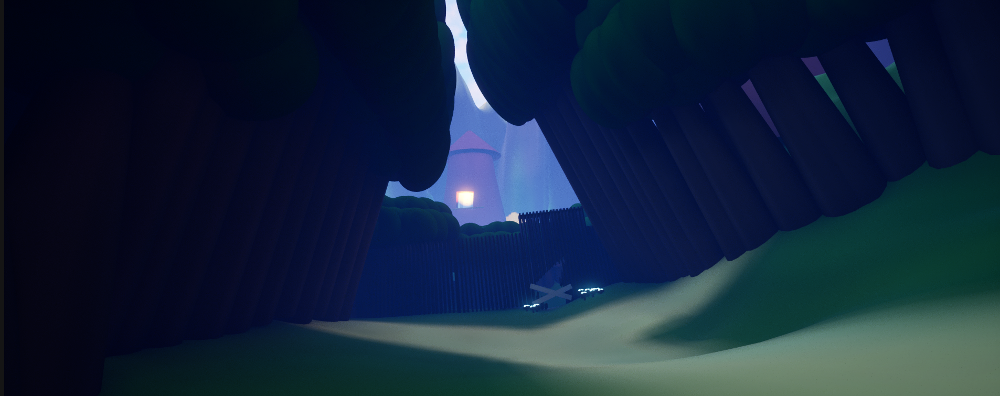
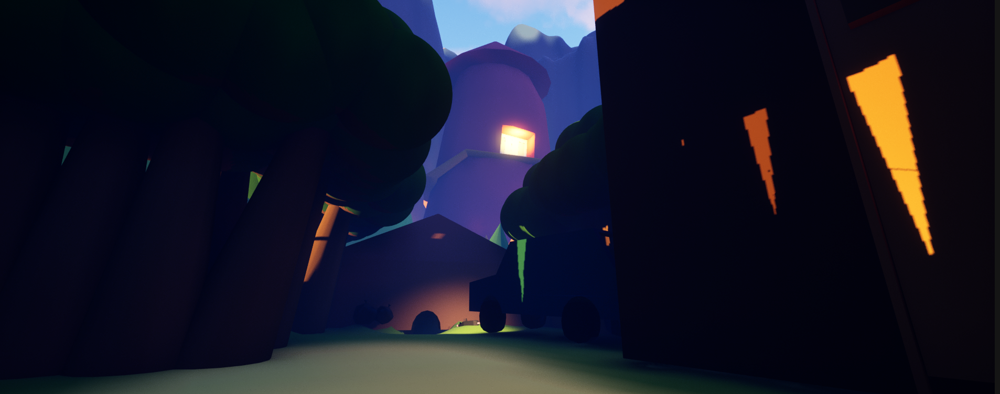
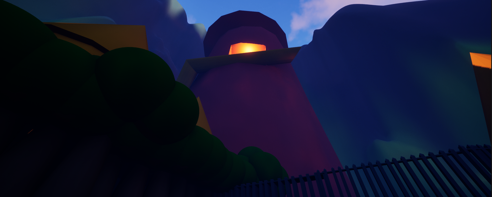
the scrapped first version
Before the forest, the walking sim was set in a city at night, which I also modeled entirely myself: streets and alleys lit by street lamps and shop signs, a café terrace, a roadblock of traffic cones, and a few interiors (a shop and a bedroom). It didn't fit the project requirements, so I scrapped it and rebuilt the level from scratch, but it's where I first practiced lighting a scene to guide the player.
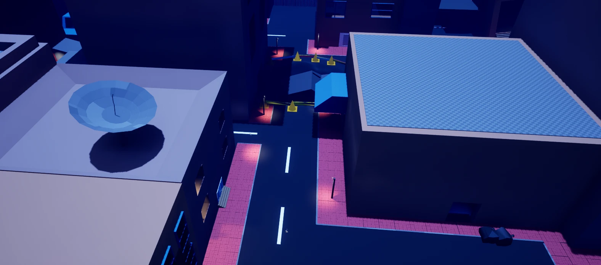
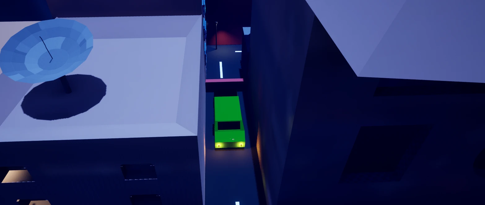
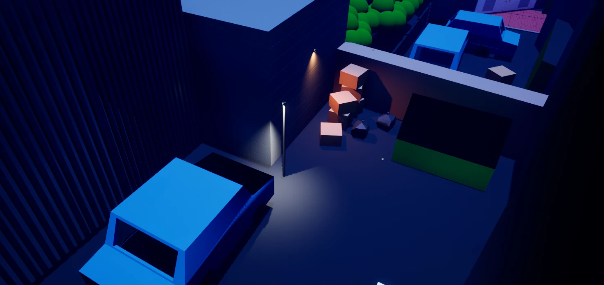
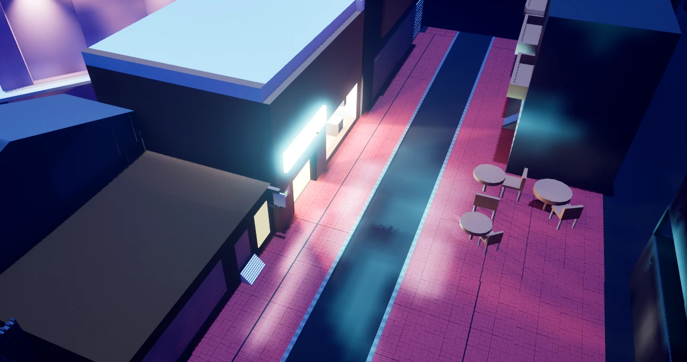
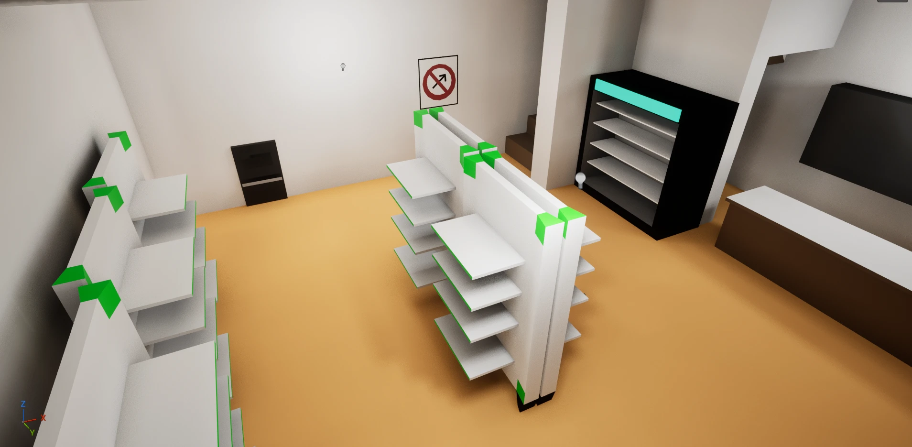
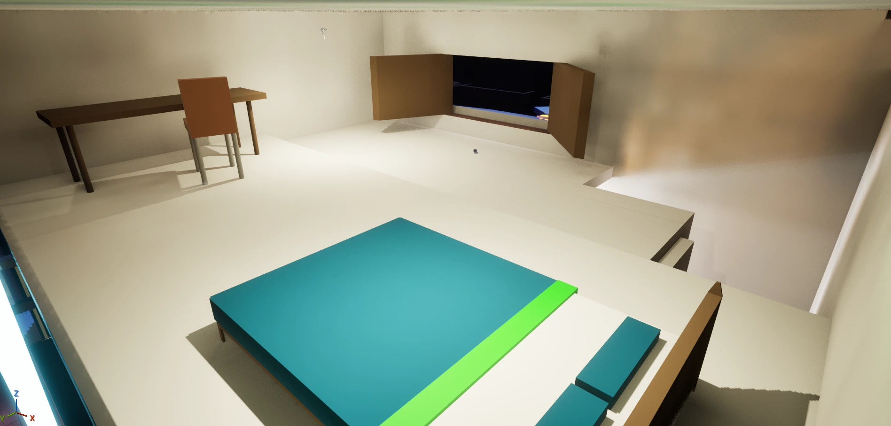
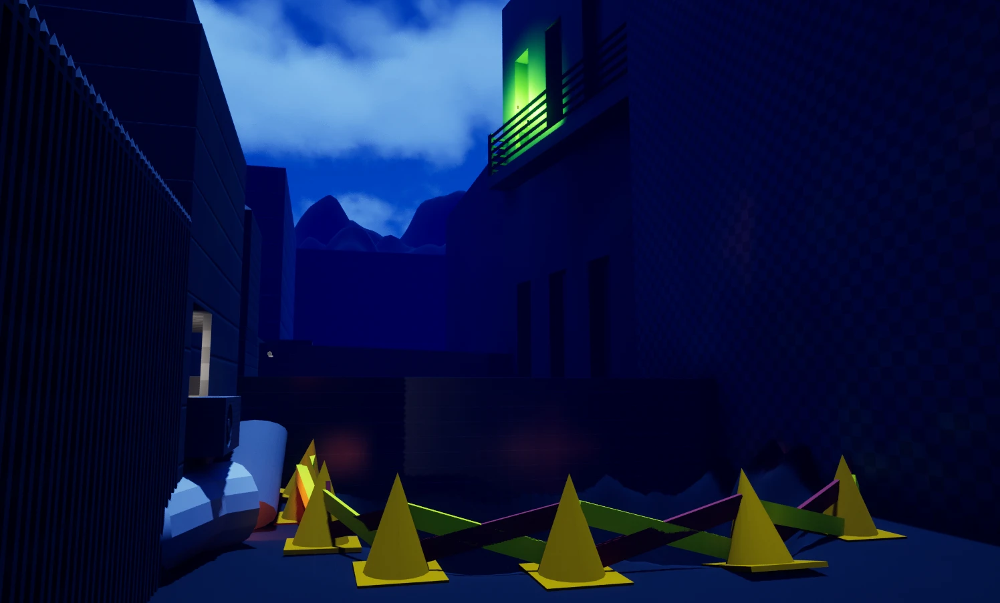
Spot the Difference (in progress)
- A horror spot-the-difference game. It opens on a sketchy job board offering $100 to "play a game", and you sign up as a beta tester. Each of the 10 levels puts a normal photo next to a "wrong" copy, and you have to find every difference to move on, as they go from odd to gory.
- Gameplay scripted in C#: clickable anomalies that know when a level is fully cleared, a buzzer for wrong clicks, differences that creep in or fade in over time, a how-to-play popup that pauses the game, and a jumpscare that rushes at the screen and shakes.
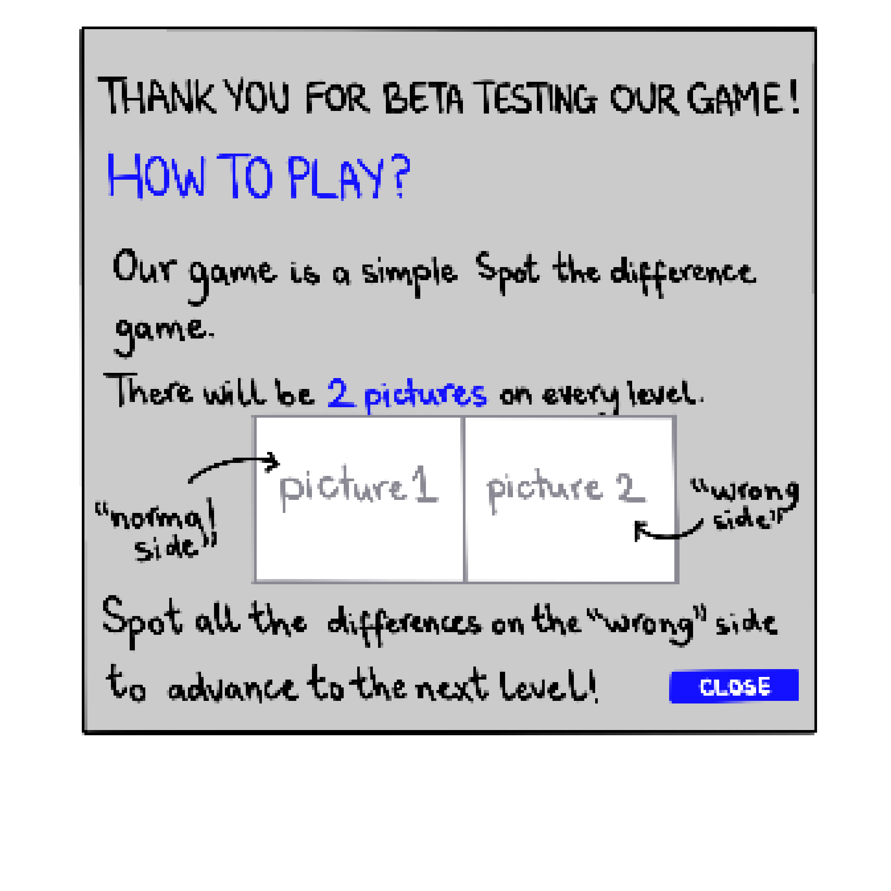

art & 3d models
When I'm not writing engine code, I'm usually drawing or modeling. Drawing is how I figure out characters, moods and ideas before they turn into anything playable, and 3D modeling (mostly in 3ds Max) is how I bring them into a game. Making my own art means I understand both sides of the pipeline: what artists need from the tools, and what the engine needs from the assets.
drawings
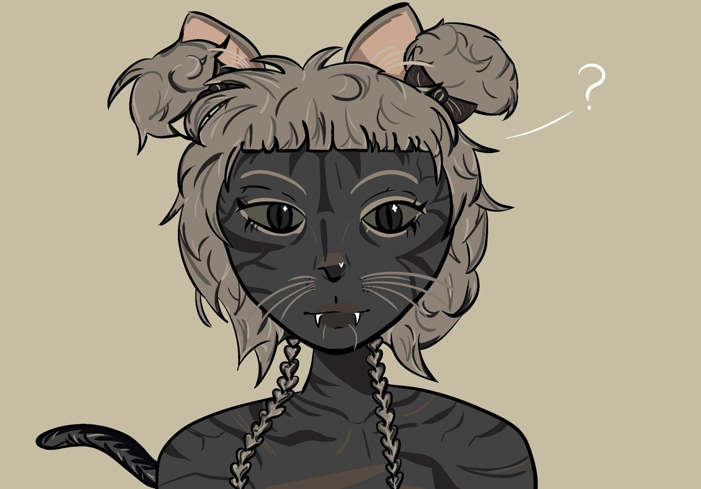
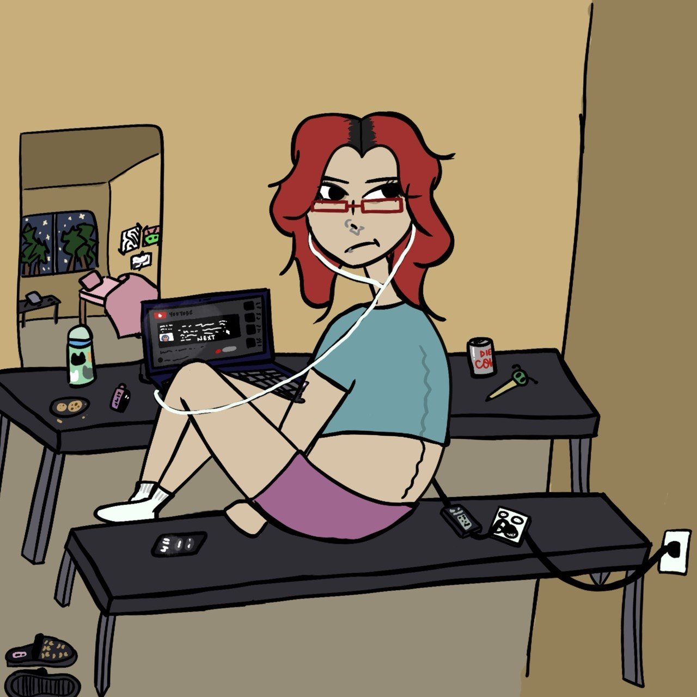
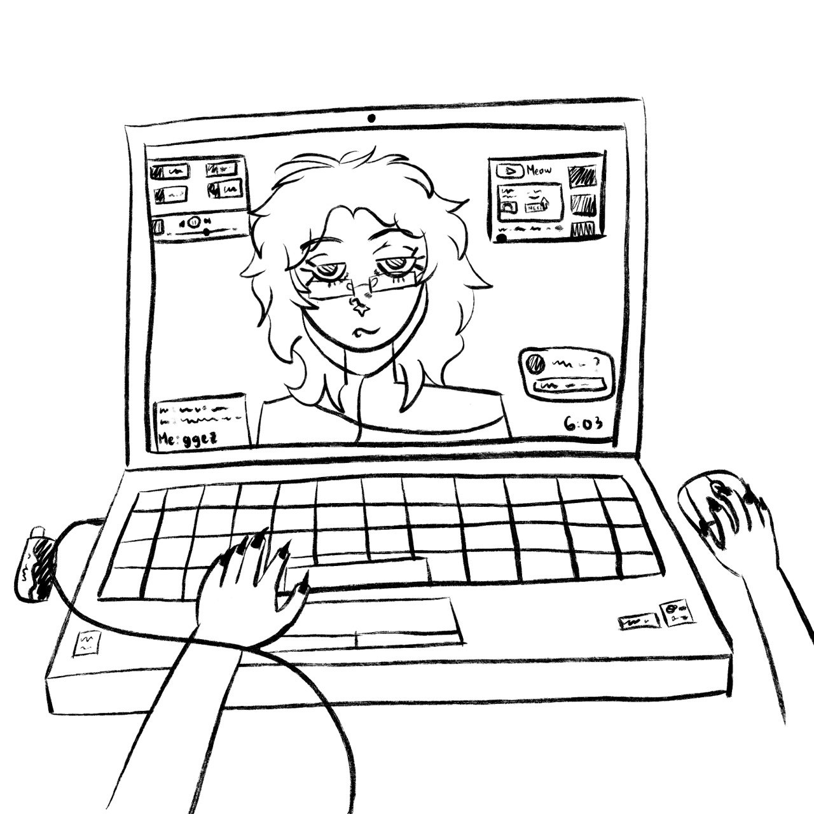
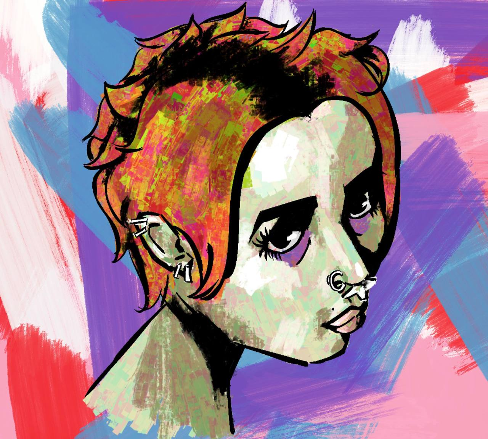
you can find more on my instagram: @bluhenin
3d models
The Puppet
A horror escape-room game I made for my 3D modeling project at Temasek Polytechnic. You're locked in a room with a chained door: solve each riddle to open one of its locks, and once every lock is open the door swings free and you escape. Take too long and the puppet jumpscares you. I programmed the whole game in Unity, and modeled and textured the room and everything in it in 3ds Max. Every prop is my own: the door, chair, table, cupboard, clock, light, chains, lock, and the monster. Drag to look around, scroll to zoom.
loading model…